📍 ルート概要
JR宇都宮駅 改札出口 → 東口方面コンコースを直進 → 高架連絡橋を渡る → Utsunomiya Terrace 1F入口 → エレベーターで5F → Angelo Court Tokyo
全9ステップ｜徒歩約5〜8分
1
改札を出る
新幹線・在来線の改札（緑の自動改札）を出ます。
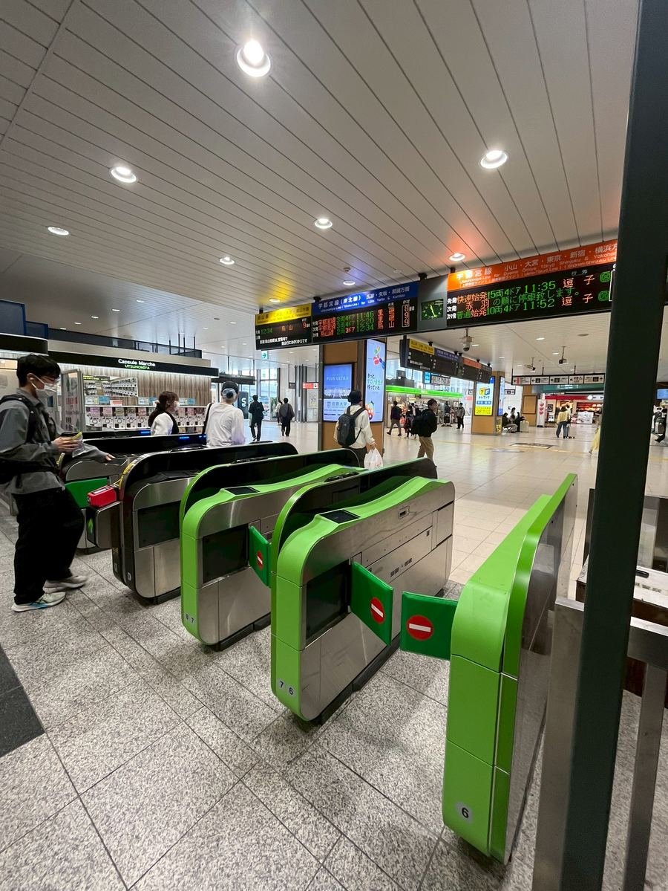
2
東口方向へ進む
改札を出たら頭上の案内板を確認。「東口 →」の方向へ直進します。
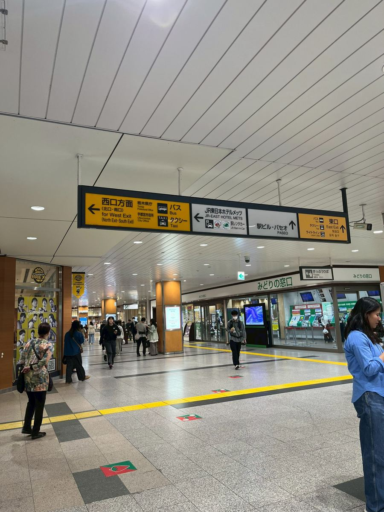
3
右手にみどりの窓口を見ながら先に進みます
右手に「みどりの窓口」を見ながらそのまま直進します。
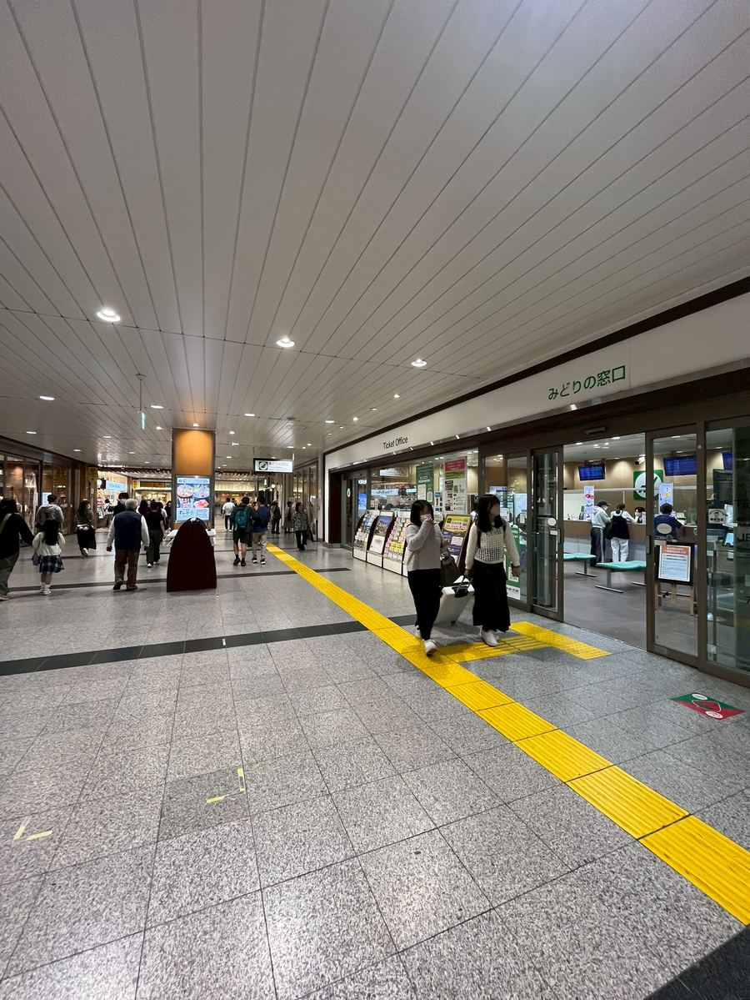
4
コンコース突き当たり
右手に「Fruit GATHERING」という店が見えたら、その突き当たりを右折します。「東口」の方面に進んでいきます。
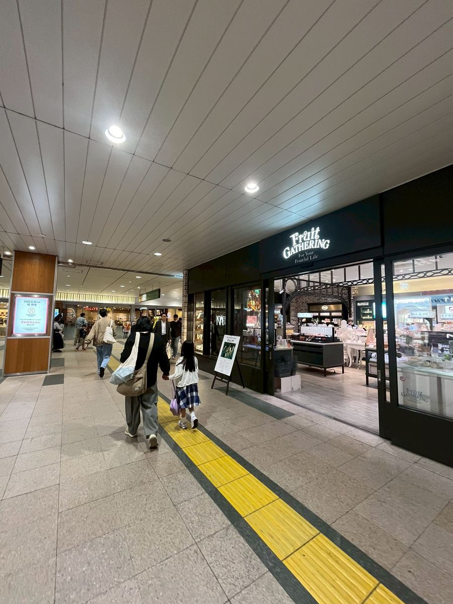
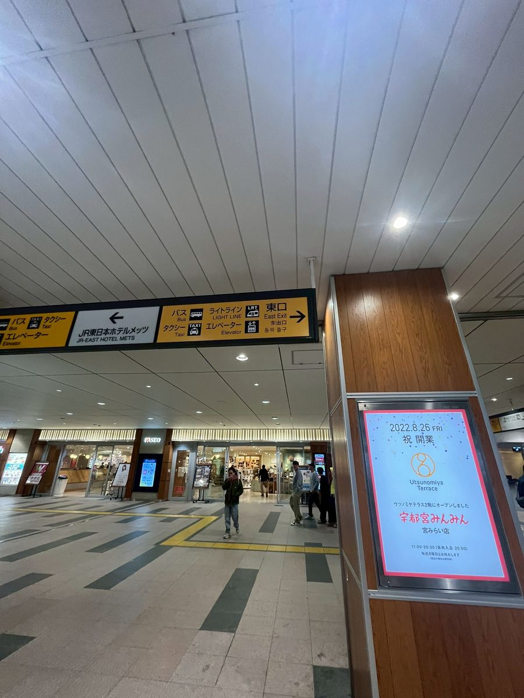
5
連絡橋を渡る
東口の外に出て、高架の連絡橋を渡ります。
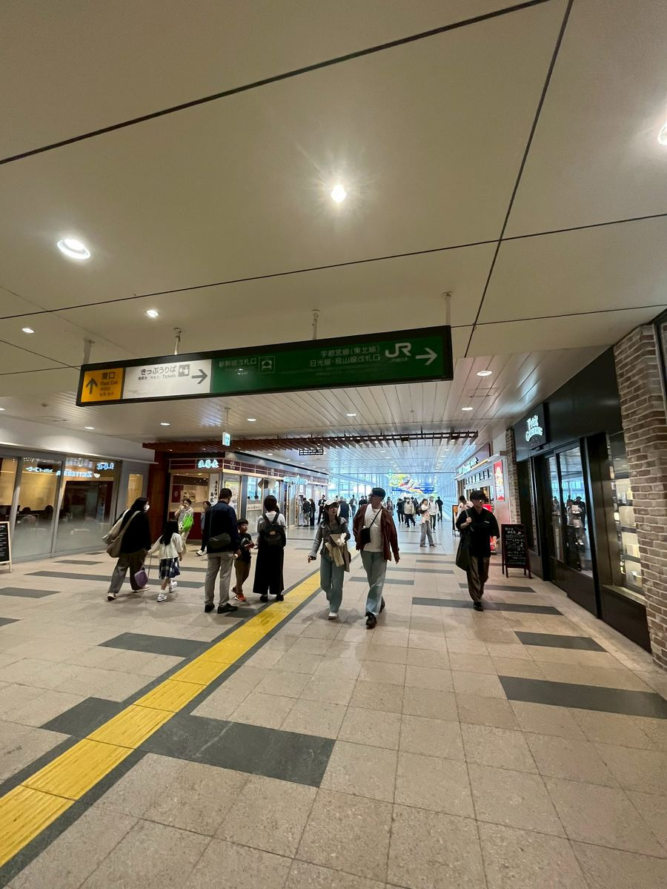
6
連絡橋を抜けて広場へ
連絡橋を渡りきると広場に出ます。正面に「Utsunomiya Terrace」の建物が見えます。
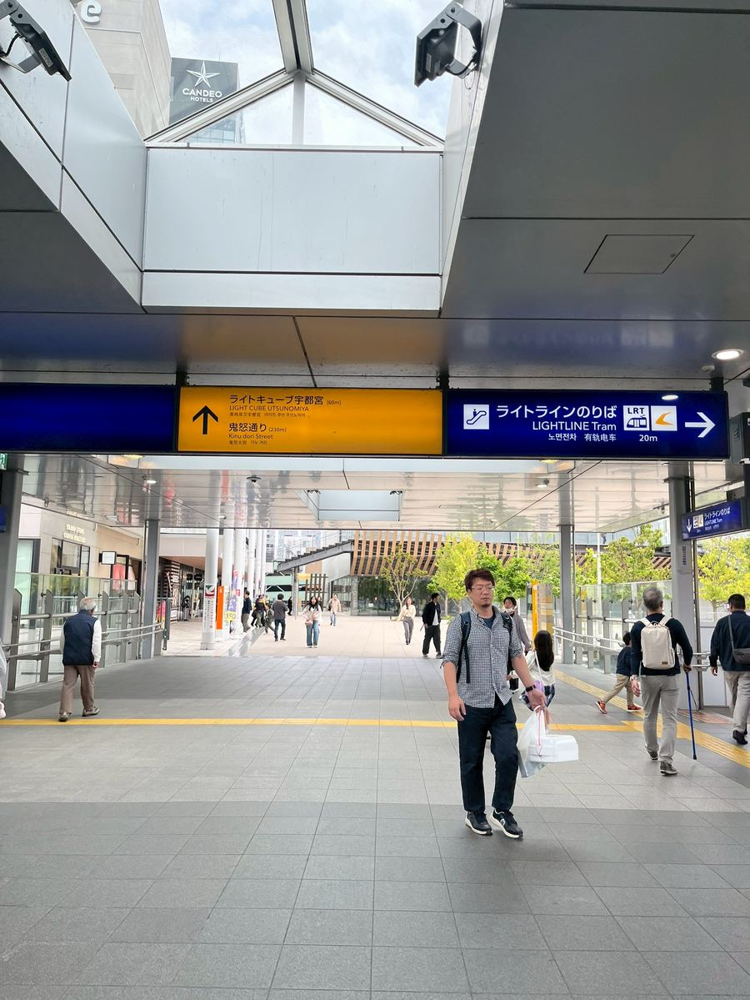
7
Utsunomiya Terrace 入口から入る
「Utsunomiya Terrace」の入口（1F）を入ります。入ったらそのまま奥へ直進します。
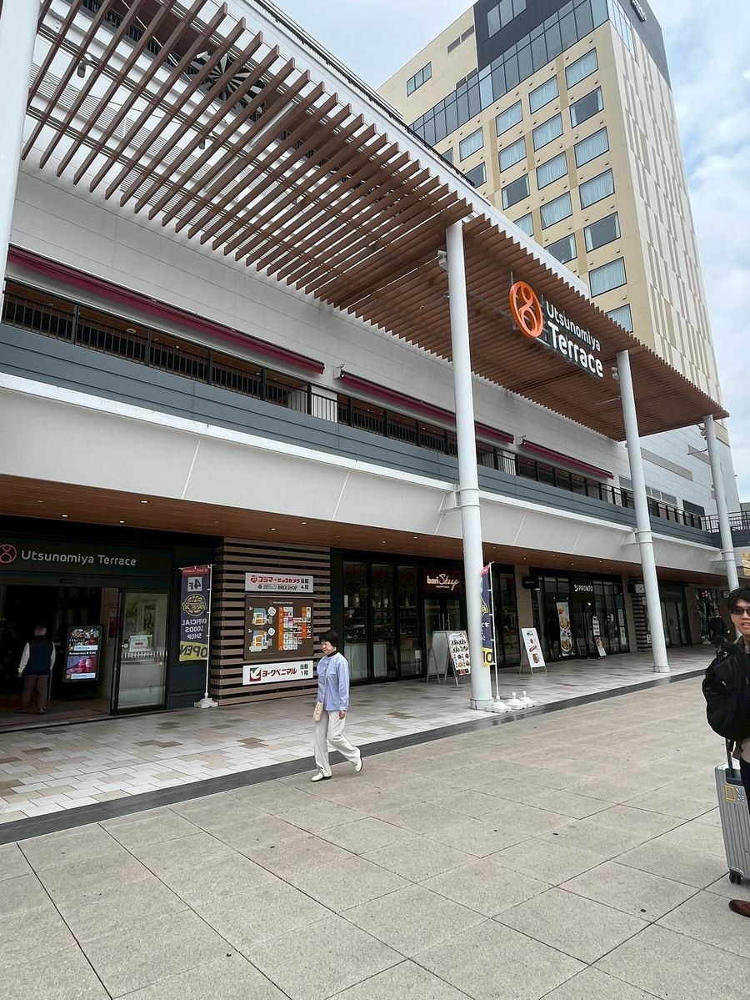
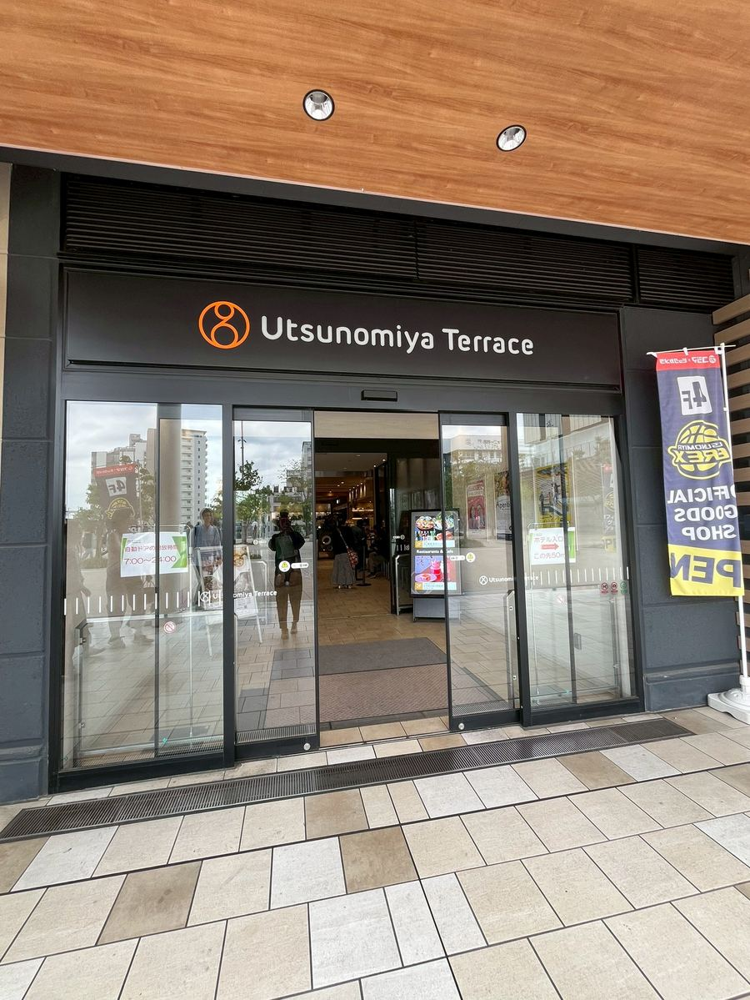
8
エレベーターで 5F へ
2Fのエレベーターホールへ進み、エレベーターで 5F を押します。
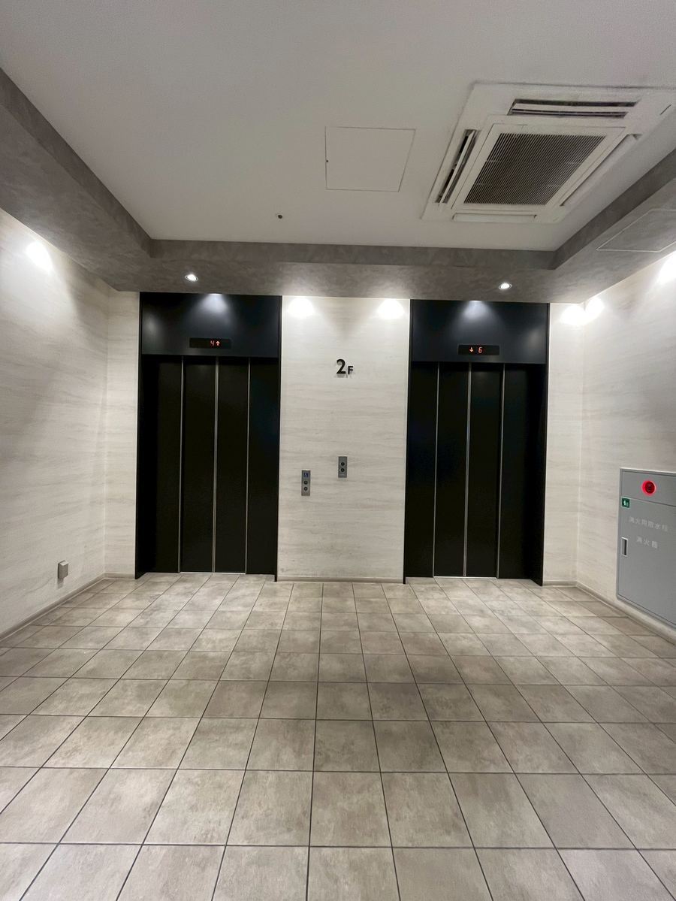
9
5F 廊下を進む
エレベーターを降りたら廊下を進みます。「Angelo Court Tokyo」の入口が見えます。

10
5F 廊下を進む
エレベーターを降りたら廊下を進みます。「Angelo Court Tokyo」の入口が見えます。
🎉
Angelo Court Tokyo に到着！
「Angelo Court Tokyo」の看板が目印。こちらが式場入口です。
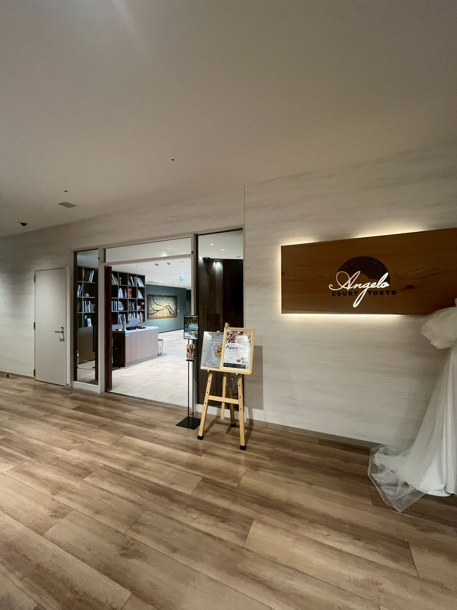